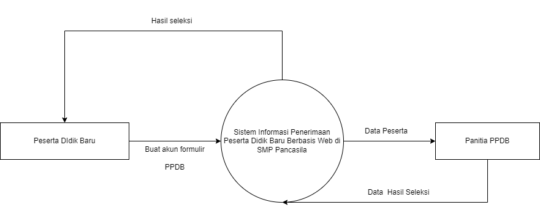
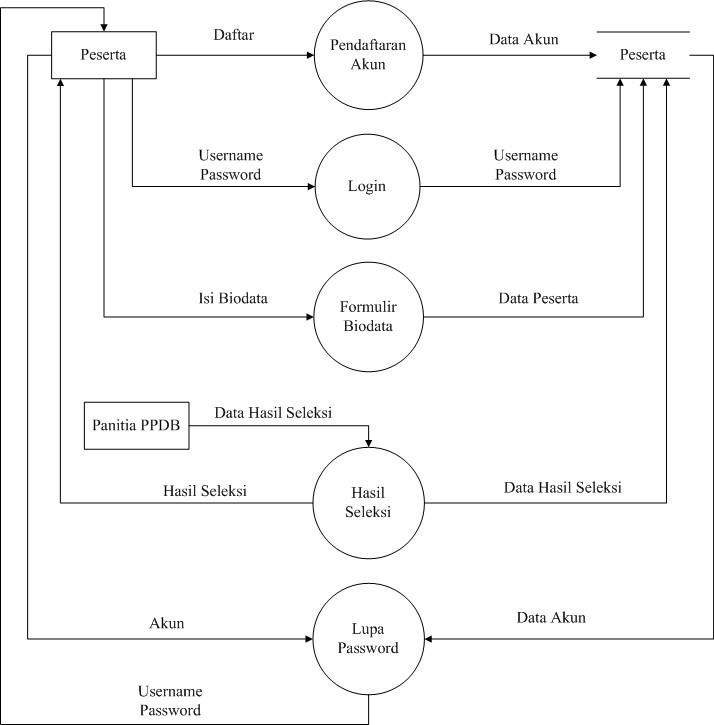
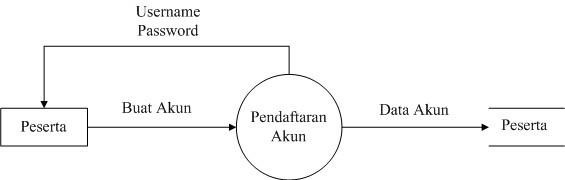
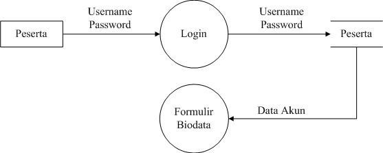
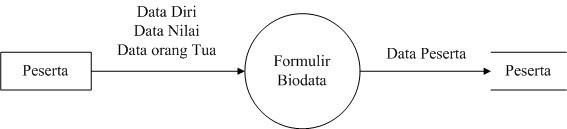
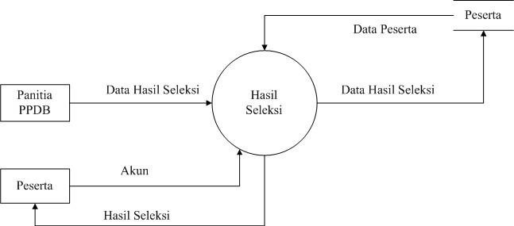
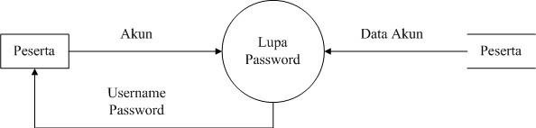
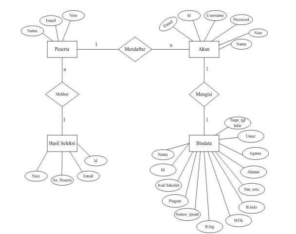
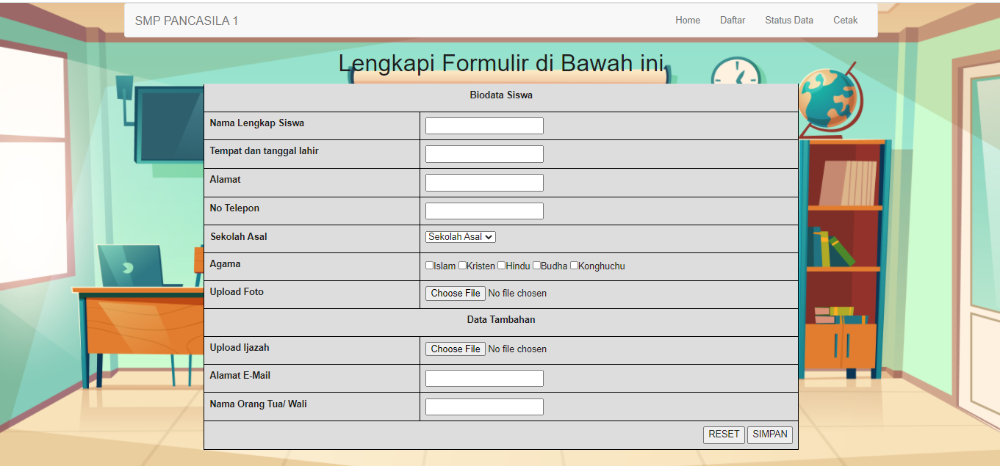

SISTEM INFORMASI SEKOLAH MENENGAH PERTAMA PANCASILA MENGGUNAKAN METODE Rapid Application Development

5200411476 Risky Devandra Hartana
5200411477 Robi Ardiansyah
5200411478 Cipta Andika Putra Pratama
5200411479 Cornellius Agova Madu Putera
5200411480 Faris Yudhika Ardana
PROGRAM STUDI INFORMATIKA
FAKULTAS SAINS & TEKNOLOGI
UNIVERSITAS TEKNOLOGI YOGYAKARTA
2020/2021
BAB I
Pendahuluan
1.1 Latar Belakang Masalah
Pada saat ini perkembangan teknologi informasi dan komunikasi (TIK), khususnya teknologi komputer sudah sangat mempengaruhi berbagai bidang kehidupan, baik dibidang ekonomi, sosial, budaya, maupun pendidikan. Salah satu produk teknologi yang popular adalah teknologi website.Teknologi internet dapat memudahkan untuk mengakses data dan mencari berita maupun informasi secara online. Pemanfaatan teknologi informasi berbasis website tidak hanya dimanfaatkan oleh perusahaan ataupun pemerintahan. Namun sudah mulai menjadi kebutuhan mendasar dalam pemanfaatan media informasi online berbasis website ini dimanfaatkan di dunia pendidikan. Hal ini dapat dilihat dari hampir sekolah tingkat menengah pertama maupun atas sudah mempunyai website. Karena sangat memudahkan para calon peserta didik baru untuk mencari informasi dan melakukan pendaftaran secara online.
Sistem PPDB Online mempunyai manfaat signifikan dalam rangka optimalisasi kerja panitia PPDB di sekolah maupun calon peserta didik. Beberapa keuntungan PPDB online antara lain:
- Proses pendaftaran online bekerja 24 jam 7 hari non stop.
- Memudahkan calon peserta didik untuk mendaftarkan diri di manapun dan kapanpun
- Panitia PPDB akan dapat memotong atau mengurangi kinerjanya dalam melayani calon peserta didik.
- Menjadi bergaining position bagi sekolah sehingga masyarakat menilai positif terhadap pelayanan dan pemanfaatan teknologi modern
Pemanfaatan website di sekolah selain dimanfaatkan untuk menyajikan informasi secara online bagi civitas akademikanya dan masyarakat, namun sekolah juga sudah mulai mengoptimalkan website untuk dijadikan sebagai sistem online yang membantu kerja-kerja tertentu. Salah satu sistem yang sekarang terbukti manfaatnya adalah sistem informasi Penerimaan Peserta Didik Baru (PPDB).SMP Pancasila, saat ini adalah sekolah yang membuka kelas sebanyak 18 kelas, dan 800 siswa per tahun. Dari kebutuhan siswa yang cukup besar ini, panitia PPDB yang bertanggun jawab atas keberhasilan pemenuhan kuota siswa, membutuhkan kerja ekstra.
1.2 Rumusan Masalah
Berdasarkan latar belakang tersebut, dapat dirumuskan masalah sebagai berikut “ Bagaimana membuat suatu sistem website yang dapat digunakan untuk memudahkan calon siswa baru dan para orang tua dapat dengan mudah mendaftarkan calon siswa ke sekolah dan dapat memantau perkebangan dari siswa”.
1.3 Tujuan Penelitian
Menghasilkan sistem informasi pendaftaran sekolah berbasis online / website.
1.4 Manfaat Penelitian
- Meningkatkan efisiensi dan efektifitas pengelolaan data pada sekolah.
- Calon siswa lebih mudah memahami untuk melakukan pedaftaran karena dilakukan secara online.
- Sekolah juga dapat lebih mendata calon siswa dan siswa yang ada di sekolah.
- Orang tua siswa pun juga lebih mudah untuk melakukan pengecekan keaktifan siswa dalam waktu pembelajaran.
BAB II
Landasan Teori
2.1 Metode Agile
Metode Agile digunakan dalam penelitian ini karena sistem dapat menyesuaikan terhadap perubahan yang ada pada penerimaan peserta didik baru, dimana dijelaskan pada gambar dibawah ini:
- Timebox Planning, perencanaan dalam membangun Sistem Informasi Penerimaan Peserta Didik Baru Berbasis Android dimana melibatkan pengguna dan pihak sekolah serta Scrum Master, sehingga siswa SMP/MTs yang akan mendaftar tidak perlu datang langsung ke sekolah.
- Daily Stand-Up Meeting (Requirements Elicitation, Detail System Design, Coding Development & Testing), dengan menganalisis terhadap sistem yang sedang berjalan, membuat desain dengan menggunakan Unified Modelling Language dimana terdapat Bussiness Process dan Use Case Diagram dan melakukan pengkodean sistem informasi penerimaan peserta didik baru serta pengujian terhadap Sistem Informasi Penerimaan Peserta Didik Baru Berbasis Android untuk mengetahui apakah sudah sesuai user acceptance. Perspektif user yang telah diterjemahkan pengembang dengan baik akan memperlancar proses delivery sistem baru.
- Demonstration, dengan menjelaskan mekanisme kerja dari Sistem Informasi Penerimaan Peserta Didik Baru Berbasis Android.
- Retrospective Meeting, mengadakan pertemuan yang difasilitasi oleh Scrum Master di mana membahas sprint yang baru saja dibuat dan menentukan apa bisa diubah menjadi sprint berikutnya yang lebih produktif.

2.2 Bussines Process
Bussines Process dari penelitian ini adalah dijelaskan pada gambar dibawah ini:
- Admin adalah panitia Peserta Didik Baru (PPDB) dapat melakukan login dalam mengelola data pendaftaran dan melakukan seleksi data pendaftaran.
- Sistem Informasi PPDB dapat menampilkan dan menyimpan data pendaftaran serta menampilkan pengumuman pendaftaran.
- User adalah calon PPDB (siswa dari SMP/MTs) dapat mengisi formulir pendaftaran, melakukan pendaftaran dan melihat pengumuman pendaftaran.
BAB III
PEMBAHASAN
3.1 Perancangan Sistem
Pada perancangan, menggunakan diagram kontek, DFD, ERD, dan perancangan database. Dimana tujuan dari diagram kontek adalah mengetahui keadaan sistem yang akan dibangun. Gambar 1 adalah diagram kontek untuk sistem yang dibuat.
Gambar 1. Diagram kontek
Berdasarkan Gambar 1, maka akan dipecah menjadi data flow diagram (DFD) di Gambar 2. DFD adalah suatu model logika data atau proses yang dibuat lebih mendetail dibanding diagram konteks yang diperbolehkan, bisa dicapai dengan mengembangkan diagram. Sisa diagram asli dikembangkan ke dalam gambaran yang lebih terperinci yang melibatkan tiga sampai Sembilan proses dan menunjukkan penyimpanan data dan aliran data baru pada level yang lebih rendah.
Gambar 2. DFD level 0
DFD level 0 merupakan pengembangan dari diagram konteks, DFD level 1 merupakan pengembangan dari DFD level 0. Tiap proses dari DFD dapat dikembangkan lagi menjadi lebih detail sampai proses-proses tersebut tidak dapat dikembangkan lagi
Gambar 3. DFD level 1

Gambar 4. DFD level 2

Gambar 4. DFD level 3

Gambar 5. DFD level 4

Gambar 6. DFD level 5
ERD (Entity Relationship Diagram) adalah model teknik pendekatan yang menyatakan atau menggambarkan hubungan suatu model. Didalam hubungan ini tersebut dinyatakan yang utama dari ERD adalah menunjukan objek data (Entity) dan hubungan (Relationship), yang ada pada Entity berikutnya[8]. Gambar 8 adalah ERD dari sistem yang dibuat.
Gambar 8. ERD
Perancangan merupakan proses pemecahan masalah yang disertai dengan pemikiran yang kreatif guna mencapai hasil yang optimal. Kata perancangan atau dalam bahasa Inggris "design" mempunyai arti "to plan and manage everything to be better", merencanakan atau mengatur segala sesuatu agar menjadi lebih baik
Tabel 1. Admin
| No | Field Name | Type | Width | Keterangan |
|---|---|---|---|---|
| 1 | id | Tinyint | 2 | Id_admin |
| 2 | nama | Varchar | 32 | Nama user |
| 3 | username | Varchar | 32 | Nama login |
| 4 | Password | Char | 32 | Password login |
| 5 | Level | Enum | 2 | Jabatan user |
Tabel 2. Pengumuman
| No | Field Name | Type | Width | Keterangan |
|---|---|---|---|---|
| 1 | id | Smallint | 4 | Id_pengumuman |
| 2 | judul | Varchar | 64 | Judul pengumuman |
| 3 | isi | Text | -- | Isi pengumuman |
3.2 Rancangan Desain UI
A. Rancangan tampilan desain UI halaman Home

Halaman Utama
B. Rancangan tampilan desain UI halaman Daftar
Halaman daftar